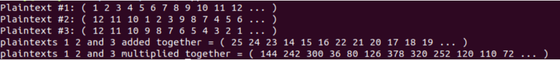
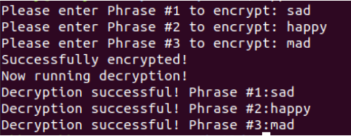

This tutorial will guide you through development of your very own applications which can take advantage of homomorphic encryption. We will demonstrate the ability to encrypt and decrypt given phrases. These phrases can be simple such as a word or it can be operations such as multiplication or addition. This guide assumes you have gained an understanding of the basic Palisade Library, build your own projects using cmake, and how to implement some basic programs. If you need some assistance, please refer to the Palisade Documentation for further information. Follow these links for more information: Official Documentation GitLab Wiki Primer Github Primer PDF
Primer Program #1: Homomorphic Addition and Multiplication To create a program that can perform encrypted operations, we need to first create a cryptocontext to be able to call the EvalAdd and EvalMult methods to add and multiply ciphertexts. These methods enable encrypted plaintexts called ciphertexts to be used in mathematical operations. The steps to create the program is to start with creating a cryptocontext. To do this simply establish the parameters first. In this cryptocontext, we will be using DCRTPoly for the underlying lattice layer element. We will use a simple plaintext modulus parameter. This signifies the maximum size of the data type to perform a modulus operation, in this case it is an unsigned 32 bit integer:
int plaintextModulus = 65537;Next we will establish sigma which will be as follows:
double sigma = 3.2;Then we determine the security level which can be 128, 192, or 256 bit security. In this case it is 128 bit. This is shown below:
SecurityLevel seclvl = HEStd_128_classic;Next we determine the maximum key-switching depth for the computation using an unsigned integer that is 32 bits long and defined as follows:
uint32_t depth = 2;Finally we can create the cyrptocontext using our chosen lattice layer, DCRTPoly, and the parameters we have established. We also have to enable encryption and SHE which is somewhat homomorphic encryption which allows for limited computation on encrypted data.
CryptoContextWe then establish our keypair so that we can encrypt our plaintext into ciphertext. To do this we need to use the KeyGen method provided by the cryptocontext.cryptoContext = CryptoContextFactory ::genCryptoContextBFVrns(plaintextModulus, seclvl, sigma, 0, depth, 0, OPTIMIZED); cryptoContext->Enable(ENCRYPTION); cryptoContext->Enable(SHE);
LPKeyPairThen we use the EvalMultKeyGen method to enable the EvalAdd and EvalMult operations.keyPair; keyPair = cryptoContext->KeyGen();
cryptoContext->EvalMultKeyGen(keyPair.secretKey);Now we can declare our plaintext. In this case, we are using an integer list using a vector array. We will declare three separate plaintexts to perform operations on. We will call the method MakePackedPlaintext to create an efficient encoder packing multiple integers into a single plaintext polynomial.
std::vectorNext we create the ciphertext by using the Encrypt method and the keypair public key we generated earlier along with the plaintext we want to encrypt as parameters.intList1 = {1,2,3,4,5,6,7,8,9,10,11,12}; Plaintext plaintext1 = cryptoContext->MakePackedPlaintext(intList1); std::vector intList2 = {12,11,10,1,2,3,9,8,7,4,5,6}; Plaintext plaintext2 = cryptoContext->MakePackedPlaintext(intList2); std::vector intList3 = {12,11,10,9,8,7,6,5,4,3,2,1}; Plaintext plaintext3 = cryptoContext->MakePackedPlaintext(intList3);
auto ciphertext1 = cryptoContext->Encrypt(keyPair.publicKey, plaintext1);
auto ciphertext2 = cryptoContext->Encrypt(keyPair.publicKey, plaintext2);
auto ciphertext3 = cryptoContext->Encrypt(keyPair.publicKey, plaintext3);
We can finally perform the operations on the ciphertext using the EvalAdd and EvalMult methods. The parameters are the ciphertexts we generated or a result of a previous EvalAdd or EvalMult result.
auto add12 = cryptoContext->EvalAdd(ciphertext1,ciphertext2);
auto add123 = cryptoContext->EvalAdd(add12, ciphertext3);
auto mult12 = cryptoContext->EvalMult(ciphertext1, ciphertext2);
auto mult123 = cryptoContext->EvalMult(mult12, ciphertext3);
We can decrypt the results of the previous step using the Decrypt method along with the keypair secret key, the ciphertext addition or multiplication result, and the plaintext variable to save the decrypted result into as parameters.
Plaintext plaintextAddResult;
cryptoContext->Decrypt(keyPair.secretKey, add123, &plaintextAddResult);
Plaintext plaintextMultResult;
cryptoContext->Decrypt(keyPair.secretKey, mult123, &plaintextMultResult);
Finally we display the results along with the original plaintexts.
cout << "Plaintext #1: " << plaintext1 << std::endl;
cout << "Plaintext #2: " << plaintext2 << std::endl;
cout << "Plaintext #3: " << plaintext3 << std::endl;
cout << "plaintexts 1 2 and 3 added together = " << plaintextAddResult << std::endl;
cout << "plaintexts 1 2 and 3 multiplied together = " << plaintextMultResult << std::endl;
return 0;
Example of output:

Primer Program #2: Input Phrase Encryption and Decryption This program is very similar to the previous primer we went over. This program is designed to take input from the user such as a phrase and store it in a variable called phrase. The program then proceed to call the method MakeStringPlainText(string) to convert the phrase into plaintext:
Plaintext plaintext1 = cryptoContext->MakeStringPlaintext(phrase1); Plaintext plaintext2 = cryptoContext->MakeStringPlaintext(phrase2); Plaintext plaintext3 = cryptoContext->MakeStringPlaintext(phrase3);This is then followed by calling the Encrypt method which takes our generated key and the phrase that would like to be encrypted.
auto ciphertext1 = cryptoContext->Encrypt(keyPair.publicKey, plaintext1); auto ciphertext2 = cryptoContext->Encrypt(keyPair.publicKey, plaintext2); auto ciphertext3 = cryptoContext->Encrypt(keyPair.publicKey, plaintext3);We have now successfully encrypted the phrases that were inputted. Now the program calls the Decrypt method which takes in our generated key, encrypted text, and the reference of the variable where we are storing the decrypted text.
DecryptResult result = cryptoContext->Decrypt(keyPair.secretKey,ciphertext1,&plaintextDecrypted1);Lastly, the program does 2 checks. First we see if the decryption was successful. If it is not then we let the user know.
if (!result.isValid) {
cout << "Decryption failed" << endl;
return 1;
}
Secondly, we check if the decrypted plaintext is the same as what we started with. If it’s not the same we display the results of the decrypted text to the user for further inspection.
if( plaintext1 != plaintextDecrypted1 ) {
cout << "First decrypted plaintext does not match original plaintext!" << endl;
cout << "Original Plaintext: " << plaintext1 << endl;
cout << "Decrypted Plaintext: " << plaintextDecrypted1 << endl;
return 1;
}
If both checks have passed, this means that we have successfully encrypted the inputted phrase. This process is repeated for each phrase that is inputted.
Example of expected output:

If users are using the linux environment and want to run the compiled program then type the command: ./